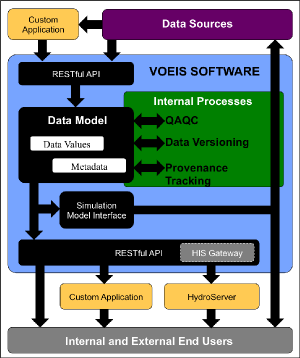

The Virtual Observatory and Ecological Informatics System (VOEIS provides scientists and data managers with an end-to-end management solution for a wide variety of environmental data types. VOEIS provides a framework for data acquisition, quality assurance/control, visualization, and provenance tracking of temporally and spatially located data.
This tutorial will help you get acquainted with and navigate through the VOEIS Data Hub. The Data Hub is a web based software interface for accessing and managing data stored on the VOEIS server. The current version of the VOEIS software supports the following data management needs:
Conceptualizing Better Data Management
Researchers collect and analyze a wide variety of environmental data types, each with unique formatting and metadata requirements. This data diversity frequently creates a significant barrier to selection and use of simple data management solutions. Thus, many researchers find themselves utilizing multiple data management systems (each requiring some amount of training for proper use), or simply relying on raw data files for all archiving and analysis needs. In recognition of the significant shortcomings of the latter approach to data management, NSF now requires funded researchers to implement data management plans. VOEIS fills this need, providing a breadth of data management features for multiple environmental data types, while simultaneously minimizing the training time required of researchers and lab group members for effective use of the software. VOEIS can be easily integrated into existing data management systems as a robust archive. Alternatively, users may select to use the VOEIS software suite as an end-to-end management solution supporting data archiving, discovery, QAQC, and publication.
VOEIS is built upon a unique and extensible data model, making it extrememly adaptable for support of new data types with unique metadata requirements, while minimizing impacts of such additions to the existing software and user-interfaces. The VOEIS data model supports: 1) field observations, 2) samples, 3) simulation results, and 4) derived values. The underlying architecture boasts Representational State Transfer (REST) methods for each data model object. This allows users to fully integrate VOEIS into existing workflows for automated data retrieval and archiving, data publication, data visualization, or simulation modeling. Furthermore, REST methods provide straightforward access to the VOEIS architecture for those users that require custom user interfaces. VOEIS is an open-source Yogo Data Management Application built with Ruby on Rails® on a PostgresSQL backend.
Preprocessing, Metadata Management, and Quality Control
Preprocessing of data involves development of data paths through a standardized framework of workflows. During quality control, errors are corrected, missing data are annotated, and metadata are created. This provides robust validation and tracking of original data which is required for comprehensive, reliable analysis later in the data workflow. Many research groups have well-developed data management systems and protocols. However, as typical throughout the sciences, these protocols have been largely developed to fit the specific needs of each research group. VOEIS integrates the needs of these separate systems into a single, interactive management platform that scales well with the metadata management and QAQC procedures required by a given lab. State-of-the-art data provenance (processing history) tracking provides researchers and data managers with unprecedented data curation capabilities.
Storage and Publication of Data Products
The interoperability among storage and science user components of VOEIS allow for rapid iterative exchange among different types of data, models, and user components. Data are stored in a common format on a server that has the capacity for rapid sharing regionally and globally. This provides the basis for bi-directional flows of data between storage and analysis, simulation, and visualization components.
Model Simulation
A challenge in ecological analysis is projecting ecological processes through time (past-to- present-to-future) and across space (from field sensor locations across large landscapes). Simulation modeling provides the means for such projection. The VOEIS framework is designed to allow data resources to be accessed by these simulation models. The resulting new data and metadata from these simulations can subsequently be added to the data resource library to provide additional, richer data for further study.